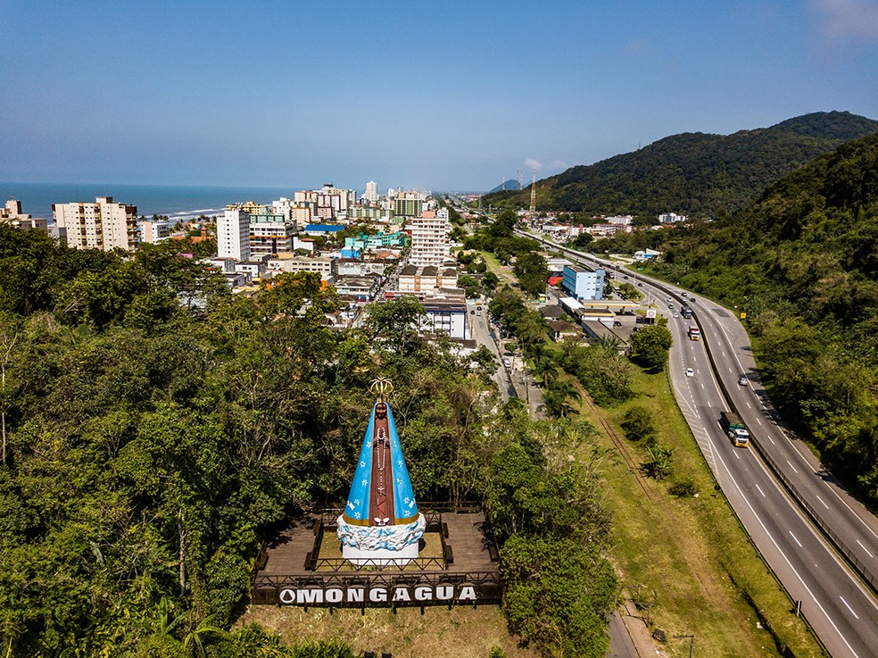
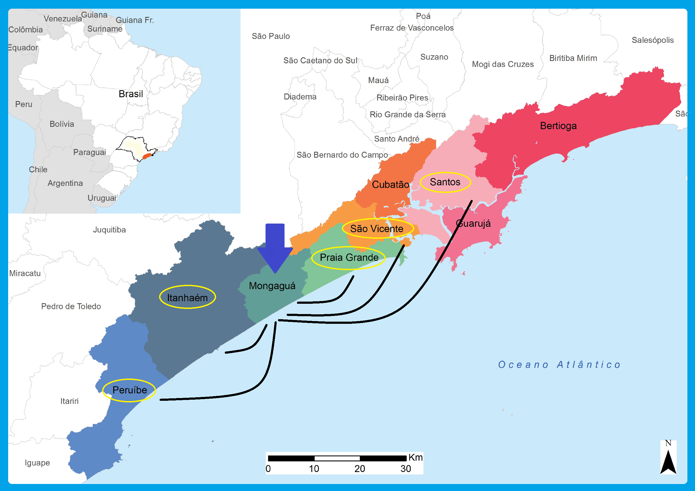
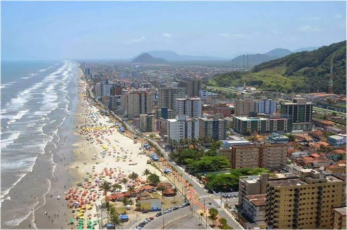
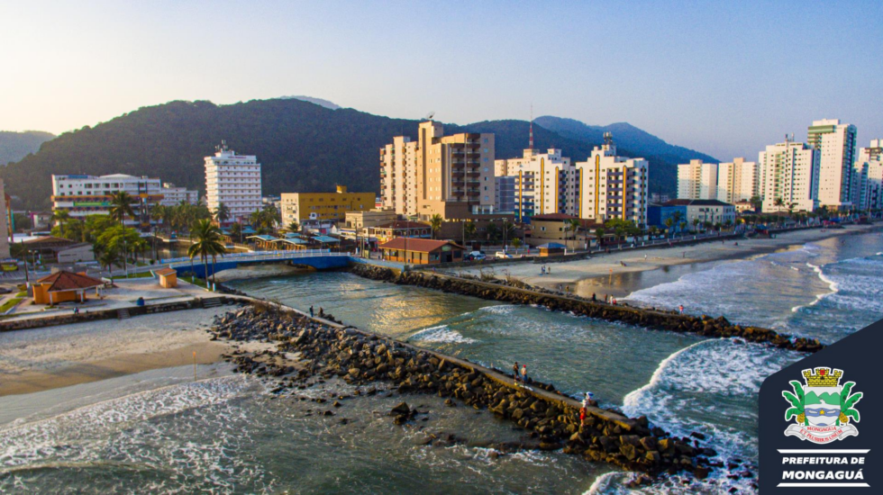
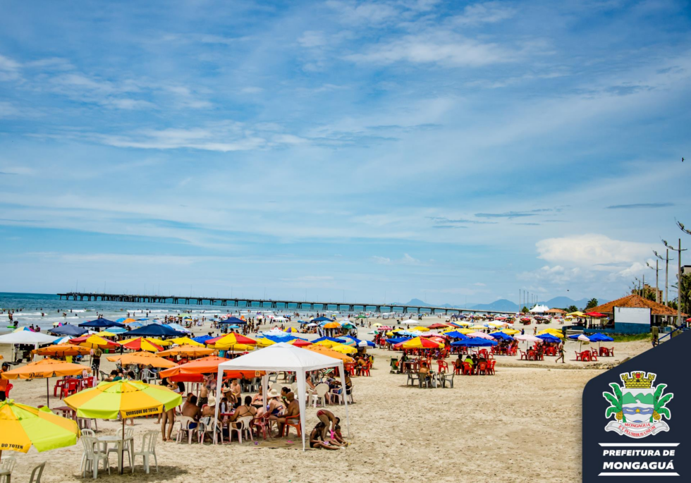
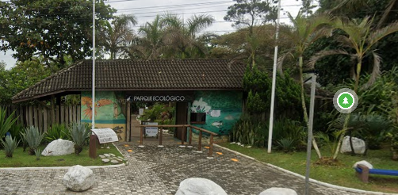
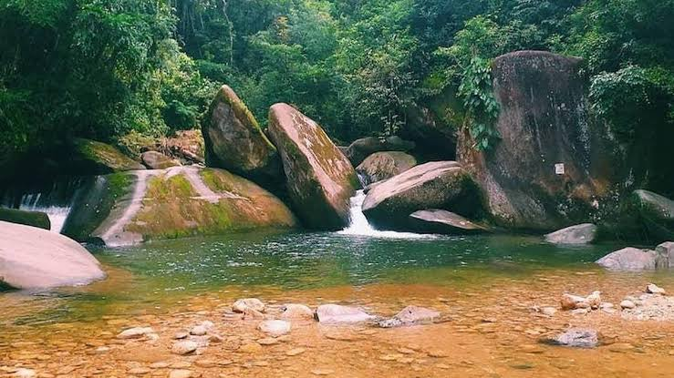
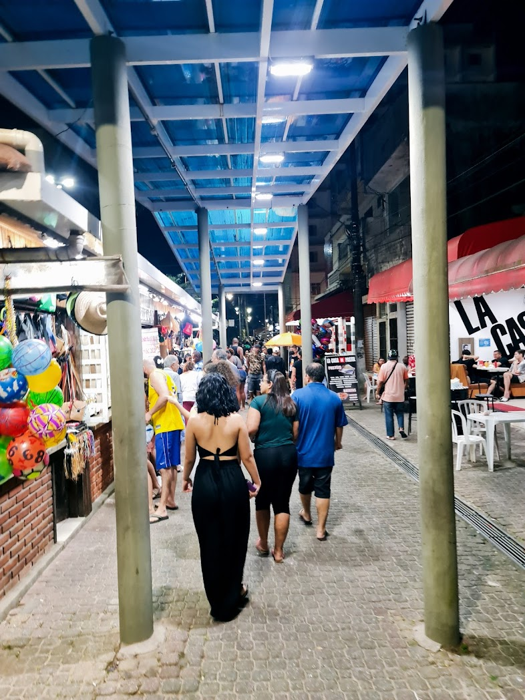

Uma das mais belas cidades do litoral sul de São Paulo, Mongaguá é conhecida por suas praias tranquilas, cultura vibrante e fácil acesso aos principais pontos turísticos da Baixada Santista.
Localizada estratégicamente entre Santos, São Vicente, Praia Grande, Itanhaém e Peruíbe, e também a apenas algumas horas da capital paulista, a cidade é uma opção ideal para quem busca lazer, contato com a natureza e imersão cultural.
<As praias de Mongaguá são amplas e possuem águas calmas, perfeitas para famílias e adeptos de esportes aquáticos.
Entre elas, destaca-se a Praia Central, que é o coração do lazer local, com um calçadão extenso e infraestrutura completa para os visitantes, oferecendo quiosques, áreas de descanso e ciclovias.
A Praia Agenor de Campos também atrai muitos turistas, principalmente pela beleza e com o atrativo da plataforma de pesca.
O Parque Ecológico A TRIBUNA, é uma ótima opção para quem gosta de contato com a natureza, apreciar a fauna e a flora, conhecendo a história da região. É destino obrigatório para a criançada.
O Poço das Antas, destino muito procurado por turistas, tem em sua paisagem maravilhosa queda d'água que a transforma em um ambiente revigorante.
A cultura em Mongaguá é diversa e rica, com eventos sazonais e celebrações tradicionais.
A Feira de Artesanato do Centro é uma parada obrigatória, onde é possível encontrar produtos feitos à mão, como artesanatos locais, acessórios e delícias culinárias típicas da região. A cidade também realiza festivais de música e dança, além de ter uma agenda de eventos religiosos e festivos que atraem pessoas de várias regiões, mantendo vivas as tradições locais e o espírito comunitário.
Mongaguá é, portanto, uma ótima escolha para quem busca um ambiente de praias tranquilas, cultura autêntica e acesso facilitado aos tesouros turísticos da Baixada Santista.